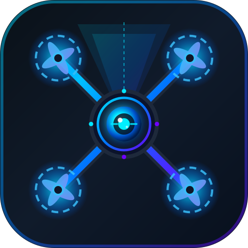

Traza por ciclo
lo mismo que guarda el JSONL de una corrida, resumido| ciclo | t | ruta en el grafo | regla | acción | TTC c. | evento |
|---|

Explorador de Solución lazo tácticoSin LiDAR y sin el sensor de profundidad del simulador: flujo óptico para reaccionar a 5 Hz, una red de profundidad monocular que propone rodeos sin frenar al dron, y un barrido de cuatro rumbos cuando se traba. Acá corre una versión simplificada del grafo de la tesis, con sus umbrales reales.
| ciclo | t | ruta en el grafo | regla | acción | TTC c. | evento |
|---|